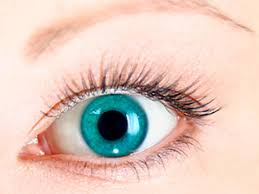

Què és la funció de relació?
La funció de relació és vital per la supervivència de qualsevol ésser viu. Consisteix en que unes cèl·lules especialitzades en detectar canvis físics i químics capten un estimul de l'exterior o de l'interior, s'envia l'informació al cervell perquè l'interpreti. Un cop es sap el que passa hi ha una resposta a traves dels òrgans efectors que són els músculs i les glàndules.

Processos necessaris
Per poder dur a terme la funció de relació, es necessiten una serie de processos:
Recepció
Per poder captar un estimul, és precissa de cel·lules i organs receptores com per exemple els ulls, les orelles... Aquests components transformen la informació per poder-la enviar a traves dels centres de coordinació.
